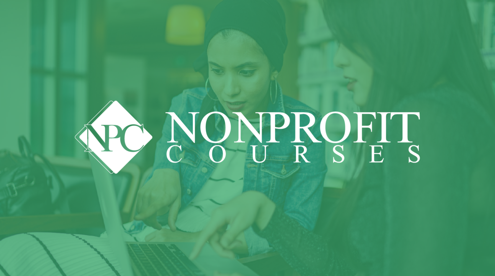

Nonprofit.Courses
Nonprofit.Courses (NpC) is a website with more than 3,700 videos, podcasts and documents on all-things nonprofit from more than 100 Content Experts. Of the 3,700, you’ll see 3,500 are free, and all the free content is open access—no membership required.
I worked with NpC for a number of years, during which, social media engagement saw a 2400% increase, there was a 70% increase in website daily active users, and email open rate increased by 20%.
